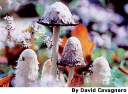
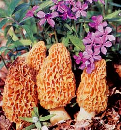
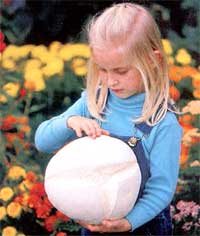
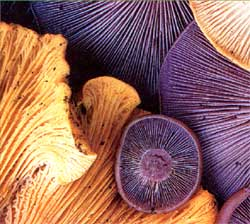
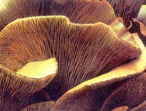

Mothers Nature
You’ll find me, on any given day when I can get away, stalking the deep woods, stumbling down soggy banks into dark streambeds, peering into hollow moss-covered logs, craning my neck toward the highest branches of dying trees, dropping to my knees to sift through leaf litter, rising and walking in one direction, then another, crisscrossing, circling, crisscrossing again, with no apparent aim. Seeing me, only a fellow mycophile would know that I am neither drunk nor addled nor lost, but simply following my obsession. I am hunting for mushrooms.
My fascination for fungi started because wherever I walked in the woods, there they were - big ones, little ones, flat ones, conical ones; red, white, brown, orange; speckled, smooth, ragged, ruffled - poking up out of leaf litter, jutting from tree trunks, standing singly on the ground like lone sentinels, huddled in little groups like close-lipped conspirators.
The trouble was, I had no idea beyond the word mushroom just what they were. What was that lovely ivory one with the lacy collar? How about those purplish pixie parasols? Those wrinkled rust-hued vases?
In the face of such frequent reminders, I could ignore my ignorance for only so long. On every hike, I could almost hear them taunting me: You don’t know anything about us. Not even our names.
Well, OK, we’ll just see about that.
Armed with field guides, I set about learning how to put mushrooms in their places, taxonomically speaking. Soon I could distinguish broad families - the fringed-tooth mushrooms, the spongy-bottomed boletes, the self-describing coral fungi, the puffballs blowing spore smoke. I also began mentally sorting the baffling variety of gilled mushrooms into manageable categories: the bulb-footed amanitas, the dunce-hatted inky caps, the colorfully capped russulas, the shell-shaped oysters.
Meanwhile, of course, I was mentally evaluating every fungus I found for its potential place in either of two especially noteworthy groups: the edibles and the killers. Never mind whether you’re a foraging gourmand or just looking, part of every wild mushroom’s mystique is the question: Which group is it? The answer in most cases is neither; not particularly edible, not particularly poisonous, but somewhere in between. The majority of mushrooms are harmless, but also bland or distasteful or otherwise unappetizing. Some others will make you sick or send you into hallucinations. About a dozen can kill you. Dozens more are safe and delicious.
A decade-plus has passed since I first started putting names to mushrooms and, frankly, I’m still not all that good at distinguishing between many look-alikes, or at placing species names on most mushrooms I find. There are, after all, more than 10,000 different kinds in North America.
But here’s what I have learned: There’s magic in mushrooms, not of the sort that makes things disappear, but instead the kind that opens your eyes to worlds you once missed. Looking for mushrooms draws you into life beyond eye level; it compels you to look, and look closely. It pulls you off trail - what are those red-capped things over there; is that a glint of white on that tree trunk? - and into wilder territory. It slows your pace from hiking speed to one more in tune with the forest entire. It adds another dimension to your awareness and enjoyment of the outdoors - another ingredient to be savored along with the birds and wildlife, the flowering plants and towering trees, the being there.
Oh, and by the way, it also sometimes yields food that is fit for the gods.
I recommend the mushroom hunting hobby, in other words, and hope you’ll give it a try. Here are some suggestions:
Get a Good Field Guide. I especially favor, as a first guide, The National Audubon Society Field Guide to North American Mushrooms by Gary A. Lincoff. Nearly half the book is photographs, hundreds of them, arranged by overall mushroom shape. In one fell swoop, you get both the big picture - the surprising diversity of fungi - and an easy way to narrow the possibilities when trying to match a real-world ’shroom to one in the book. (Be aware, however, that many mushrooms cannot be told by appearance alone; certain IDs must rely on microscopic views of spores. That big, fresh, colorful mushroom in a field-guide photo may bear only slight resemblance to the kin you find, or may look very much like a number of entirely different species.)
Later, you may want a more technical guide keyed to the many, often fine distinctions that separate species. My pick in that category is Orson K. Miller’s Mushrooms of North America. I particularly like it because, in addition to good photos and identification keys, it includes an illustrated glossary to the terminology used in those keys. Keep your eye out, too, for regional guides that focus solely on the species that occur in your area, thus narrowing the guide’s field.
Look Where the Sun Doesn’t Shine. One nice thing about hunting for mushrooms is that you’re almost certain to bag something - wherever you are, they are too. Hardly a breeze blows that’s not laden with spores. Mushrooms have even been known to push through city sidewalks. Suburban lawns, Alaskan tundra and desert chaparral all harbor fungi.
Some common species favor open, sunny habitat. But for the greatest variety (and quantity), head for the shaded woods. Unlike plants, mushrooms and all other fungi - molds, yeasts and mildews - don’t produce their food from sunlight. Instead, they feed off the nutrients in other organisms. Fungi release enzymes that break down material, then they consume the nutrition. Most mushrooms live on dead organic matter - and that’s a good thing, too, or we’d be up to our ears in detritus. Others draw their sustenance from living plants.
In any case, because they generally don’t need sun and do need moisture, mushrooms are in greatest abundance in the nooks and crannies of the forest, where the sun doesn’t shine full bore. Leaf litter is a favorite refuge for black trumpets; pear-shaped puffballs emerge on rotting logs; oyster mushrooms climb tree trunks. To find them, look around, in and under, up and down.
Remember the Iceberg Principle. Because of their beauty and diversity, it’s tempting to view mushrooms much like wildflowers, which are plants growing mostly above ground. But a mushroom is only the fruit, or more precisely the fruiting body, of a fungus growing underground or within wood. Dig beneath a specimen and you’ll find the main part, a mass of white threads called a mycelium. The white threads themselves are called hyphae. Each hypha grows from the tip much like a plant’s roots, releasing enzymes and absorbing moisture and nutrients.
This is significant stuff to mushroom hunters for two reasons. First, it’s reassuring to know that harvesting mushrooms is more akin to plucking berries from an underground vine than yanking wildflowers by their roots. Although it’s always wise to pick only a few mushrooms from any given spot - particularly if you’re in an area where others also forage - you can rest assured the “plant” itself will live to produce more fruit.
Also, you can use your awareness of hyphae habits to help you locate or identify mushrooms. Many species grow only in mutually beneficial relationships with certain kinds of trees. Their hyphae attach themselves to and spread from the tree’s roots, drawing distant soil nutrients into the tree while gaining necessary food from it. Slippery jacks, for example, live only under pines or spruce. To look for the mushroom, look for its host trees.
Details, Details. The real business of mushrooming is telling one from the other. Some are so distinctive they can’t be mistaken. Most are not. Because there are so many look-alikes, the devil is in the details: What color, shape and texture are the mushroom’s cap, gills and stem? Is the specimen growing singly or in groups, in soil or in rotting or living wood? Are the gills thick or thin, opaque or translucent? Is the stem tapered or straight, hollow or solid? Is there a bulbous sac at the base or a lacy veil at the top?
To find all the answers, you must study your mushrooms closely. Start in the field by taking notes, addressing as many of the above questions as possible and more: What trees are nearby? Does the specimen have a distinctive odor? What’s the season, temperature? Jot everything down on a small notepad. Then, using a trowel or a sturdy knife, ease the mushroom from its place, taking care to get the entire stalk out of the ground. A mushroom’s base can be a vital clue. Wrap the specimen in waxed paper or put it in a paper bag (not plastic, or your mushroom will become only mush).
When you get home, examine each specimen even more closely with a 10x hand lens. Compare your notes and observations with field-guide descriptions. True, you’ll soon be awash in terms like “squamules” and “glabrous.” Don’t let them intimidate you - persist, and use your guide’s glossary.
A mushroom’s spore color is an essential clue, too, revealed by taking a spore print. Cut off the stem, put the cap gill- or pore-side down on a piece of white paper, and cover it with a bowl or jar larger than the mushroom. The next day, lift the cap to reveal the print - often lovely, and always worth saving with your notes for future reference.
Identifying mushrooms can be frustrating, especially to a beginner. Just keep at it. Soon enough you’ll get a few positive IDs under your belt, and names to go with them: “Ah, that’s a velvet foot, Flammulina velutipes,” you’ll say. “Hmmm, a mica inky cap, Coprinus micaceus.” Other times, your specimen won’t seem to match anything in your guide. No problem. Keep your notes, and give the darn thing your own name for now. Among my favorite local mushrooms is a small and delicate species I found and named some 10 years ago: “Those-little-pink-jobbies.”
“Edible” Doesn’t Mean “Eat.” The bad news is, roughly a dozen mushroom species are not just make-you-sick toxic but are killers - and relatively common. The good news is, you can easily avoid them. If you’re unsure of any mushroom’s identity, just don’t eat it. For a beginner, that means avoiding all wild mushrooms. Even with experience, think twice before sampling any mushroom with gills - particularly white gills. Among those are the widespread and attractive but treacherous Amanitas, including the aptly named death cap. Avoid LBMs, too, or “little brown mushrooms.” Among those are the deadly galerina.
Now more good news: While you’re honing your skills for distinguishing confusing gilled mushrooms, you can add easier-to-identify nongilled types to your edibles list, one at a time. Virtually all morels, corals, boletes and puffballs are safe; some are delicious, and even a novice can learn to recognize and enjoy them, given reasonable care. Do note the terms “virtually” and “reasonable care,” however. Even among these groups, potentially serious pitfalls exist. The best way to learn edibles is to search with someone who knows them well, or join an organized mushrooming group on field trips.
And finally, don’t be surprised if one day you realize, while crawling on your knees sifting through leaf litter or peeking into hollow logs, that you don’t particularly care whether a specimen is edible. It’s the fungi themselves - their beauty, variety, mystery - and the places they take you in finding them that draw you to the woods.
Congratulations. You’ve just discovered the real magic in mushrooms.
|
 Shaggy Mane |
 Yellow Morel |
 Giant Puffball |
|
 Chanterelle and Blewit |
 Jack O? Lantern |
|